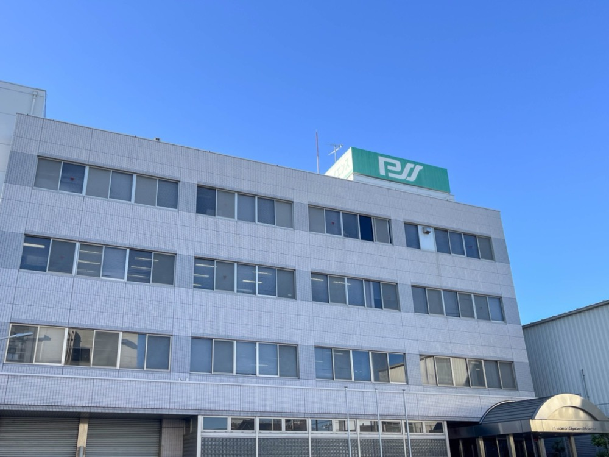
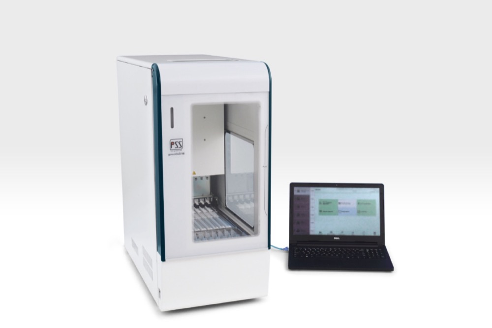

日々の研究に欠かせない存在・PSSとは
田島 秀二Shuji Tajima
プレシジョン・システム・サイエンス株式会社 代表取締役社長
1976年4月アドパンテック東洋株式会社入社。1989年2月当社入社、4月取締役就任。1989年6月当社代表取締役社長就任（現任）。2021年1月、全自動PCR検査システムがそれぞれ「2020年日経優秀製品・サービス賞：日経産業新聞賞」（エリート インジーニアス）、「2020年日刊工業新聞・第63回十大新製品賞：本賞」（ジーンリード エイト）を受賞。2022年11月、令和4年秋の叙勲にて「旭日単光章」を受章。
企業サイトを見るTRACK 01
日々の研究に欠かせない存在・PSSとは

千葉県松戸市にあるプレシジョン・システム・サイエンス株式会社は、バイオ関連業界向けに臨床検査の実用化に関する事業を、ワールドワイドに展開しているグローバル企業だ。
田島代表が学生だった当時、日本は高度経済成長期の真っ只中で、いわゆる公害が問題視されていた時期であった。応用化学科に在籍していた田島代表は、もともと興味があった環境物質の分析についてもっと深く知りたいと感じ、卒業後は理化学機器を取り扱う会社に入社。数々の研究所や臨床検査会社、検査センターの現場を相手に仕事をしていた。
まだ手作業で対応するような臨床現場が多かった1980年代、検査技師の方の苦労を解消しようと、田島代表は海外製の理化学機器（臨床検査機器）自動化装置を日本人向けに特注機として取引先に納めていた。もちろん作業効率は格段に向上したが、定期的な保守メンテナンスが必要不可欠だった。 そこで田島代表が知人に依頼し、納品した理化学機器の保守メンテナンスを目的として、1985年7月17日に設立した会社がPSSだった。
TRACK 02
コロナ禍の世界各地に普及した松戸のテクノロジー

1995年、PSSは微量分析技術として、マイクロ磁性ビーズによる目的物質を自在に分離、そして抽出できるマグトレーション技術（Magtration® Technology）を世界で初めて開発、国内外各国で特許を取得した。
そしてこのマグトレーション技術によって、様々な変化を間近で見ることができたのだ、と田島代表は語る。
最初の大きな変化は、遺伝子・DNA情報の活用技術分野において劇的におこった。その分野には極微量のDNAを数百万倍にも増幅できる技術（PCR）が不可欠だが、そのPCR技術を所有するヨーロッパ大手の会社に、PSSが開発したマグトレーション技術を持ち込んだところ、彼らは一目見ただけで採用を決定したのだ。その後もトントン拍子に話は進み、なんと欧州にある複数の有力会社とOEM契約を結ぶことに。現在では世界規模で影響力を持つ事業となっている。